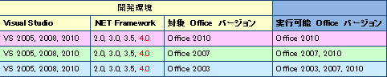
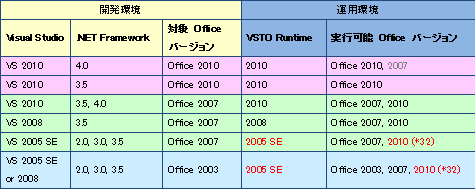
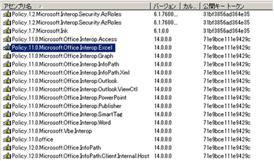
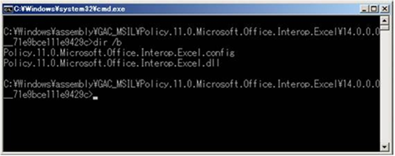

(※ 2012 年 5 月 23 日に Japan Office Developer Support Blog に公開した情報のアーカイブです。)
こんにちは Office 開発系サポートの森 健吾 (kenmori) です。
今回の投稿では .NET Framework 上で動作する Office ソリューションを開発する際に、検討すべき開発環境のバージョン選定のために必要となる情報について記載いたします。
以下の内容でご説明させていただきます。
2017/2 Update
新しい Visual Studio と Office バージョンについての記事を以下に投稿しました。
タイトル : [オートメーション / VSTO] .NET での Office ソリューション開発時の開発環境のバージョン選定 (最新版)
アドレス : https://officesupportjp.github.io/blog/(オートメーション - VSTO) .NET での Office ソリューション開発時の開発環境のバージョン選定 (最新版)/
目次
1. 導入 - 開発環境に必要なもの
2. Officeオートメーションの場合
3. VSTO ソリューションの場合
4. 複数バージョンが混在インストールしている場合の動作について
1. 導入 - 開発環境に必要なもの
以下に、一般的に開発環境に必須となる製品を記載します。上述の通り .NET Framework 上で動作するアプリケーション (オートメーションや VSTO テンプレートを使用したカスタマイズ)を開発する場合を前提としております。
・Visual Studio
・.NET Framework
・Office
・Office Primary Interop Assembly (PIA)
しかしながら、動作対象のクライアント(例. Office 2003、2007、2010 で動作可能にするなど)を想定し実装する機能を決めていく中で、開発環境のバージョンを選定する必要性が必ず出てきます。
結論から言うと、Office ソリューションは全般的に上位互換性があるため、旧バージョンで開発する方が互換性を高められます。
例えば、Office 2003 ソリューションを作成すると、ほとんどの場合 Office 2007 や Office 2010 ソリューションとしても正常に動作します。
しかし、例えば新バージョン (例. Office 2007 や 2010) より導入された新機能 (例. SmartArt など) を使用する場合は、新バージョンのアセンブリを参照するなどして開発を実施する必要があります。
このように互換性と実装機能のバランスをとって、開発環境のバージョンを選定する必要があります。
タイトル : 2007 Office system での相違点
アドレス : http://technet.microsoft.com/ja-jp/library/cc179054(v=office.12)
タイトル : Office 2010 での製品と機能の変更
アドレス : http://technet.microsoft.com/ja-jp/library/cc178980
VSTO ソリューションのイメージがつかない方はこちらをご確認ください。
タイトル : Office プロジェクト テンプレートの概要
アドレス : http://msdn.microsoft.com/ja-jp/library/8553caee
一般論は上記の通りですが、細かな注意事項がありますので、この投稿ではその注意事項についてまとめます。
2. Office オートメーションの場合
Office オートメーションは、カスタム アプリケーションに Office PIA などのアセンブリ参照を追加し、Office API を呼び出すようなカスタマイズ手法です。Office PIA につきましては、補足 1 として後述します。

※ .NET Framework 4.0 の埋め込み相互運用機能を使用すると、内部的に実行時バインドが実施されるため理論的には下位バージョンにも接続できますが、新バージョンのみに存在するプロパティやメソッドを参照した場合に予期せぬ影響があることが懸念されます。このため下位互換を想定した実装や展開はお勧めしておりません。
※ 同様に、Office PIA を参照せず完全に実行時バインドで実装する場合も、上記と同様となります。
Office PIA の上位互換性について
Office のアセンブリ参照は、基本的に上位互換性を保つよう実装されております。.NET Framework 上でのアセンブリ参照には、アセンブリの完全修飾名が一致する必要があり、この名前の構成要素としてアセンブリバージョンが含まれます。
しかし、バージョンの不一致を考慮して Office PIA は .NET Framework のアセンブリ バージョンのリダイレクトを使用し、新バージョンへ参照をリダイレクトするようにしております。Office におけるアセンブリ バージョンのリダイレクトについては補足 2 に後述します。
上位バージョンに対する互換性としては、下位バージョンで存在したクラスやプロパティ、メソッド (またはメソッドの引数の定義情報) が上位バージョンに存在しないという可能性は低く、互換性が保たれる場合が多い状況となります。
しかし、設計変更により、上位バージョンでの動作が異なる場合があるため、メジャーバージョンが変わる際には必ずテストを実施し、想定した動作が実行されるかを確認することが不可欠です。
3. VSTO ソリューションの場合
VSTO ソリューションも Office オートメーションと同じで、基本的には上位互換性があります。ただし、こちらについては開発および動作環境が細かく設定されており、制限事項もありますので以下の表をご確認ください。なお、以下の表に記載のとおり、VSTO ソリューションを実行する場合、VSTO Runtime のインストールが必須となります。

※ VSTO 2005 SE Runtime は、Office 2010 64 bit 版には対応しておりません。
上手の図は、下記サイトの図を簡略化 (あまり想定されない条件等を一部省略) したものです。詳細につきましては、以下のページをご確認ください。
タイトル : 異なるバージョンの Microsoft Office でのソリューションの実行
アドレス : http://msdn.microsoft.com/ja-jp/library/bb772080.aspx
4. 複数バージョンが混在インストールしている場合の動作について
複数バージョンの Office が単一マシンに混在している環境 (例. Office 2007 と Office 2010 が両方インストールされているなど) の場合、Office としても制限付きで動作することをサポート技術情報にてお伝えしております。
タイトル : Office 2010 スイートおよび Office 2010 プログラムを、他のバージョンの Office を実行しているコンピューターで使用する方法について
アドレス : http://support.microsoft.com/kb/2121447/ja
しかし、これはあくまで標準機能の説明であり、カスタム コード等の実装内容につきましては、残念ながら動作保障はできません。これまでのお問い合わせ内容からも、旧バージョンの DLL が誤って呼び出されるなど、様々な予期せぬ動作が報告されております。
もし、お客様環境にてテストいただき正常動作しない場合につきましては、旧バージョンをアンインストールいただき、新バージョンを修復インストールしていただくなどの措置をお願いすることになります。
この点につきましては、何卒ご理解ください。
補足
以下に、本投稿でご紹介した情報に対する補足事項を記載いたします。
補足 1 : Office PIA について
Office PIA は、発行元である Microsoft より署名された正式な相互運用アセンブリです。
プログラムの追加と削除を開き、Office のインストールコンポーネントより “.NET プログラミング サポート”をインストールするか、以下のアドレスに記載した弊社ダウンロードサイトよりダウンロードして入手したものである必要があります。
これ以外で生成したアセンブリ (例. TLBIMP などを使用した相互運用アセンブリ) などを開発環境で参照してビルドしたモジュールを、運用環境に配布することは許可されておりません。
タイトル : Office 2003 更新プログラム: 再配布可能なプライマリ相互運用機能のアセンブリがダウンロード可能です。
アドレス : http://support.microsoft.com/kb/897646/ja
タイトル : Office 2003 Update: Redistributable Primary Interop Assemblies
アドレス : http://www.microsoft.com/en-us/download/details.aspx?id=20923
タイトル : 2007 Microsoft Office System Update: Redistributable Primary Interop Assemblies
アドレス : http://www.microsoft.com/en-us/download/details.aspx?id=18346
タイトル : Microsoft Office 2010: Primary Interop Assemblies Redistributable
アドレス : http://www.microsoft.com/en-us/download/details.aspx?id=3508
タイプ ライブラリ インポータを使用して相互運用アセンブリを生成できますが、これを配布することは許可されておりません。
タイトル : Tlbimp.exe (タイプ ライブラリ インポーター)
アドレス : http://msdn.microsoft.com/ja-jp/library/tt0cf3sx.aspx
※ .NET Framework 4.0 の埋め込み相互運用機能を使用した場合は、コンパイルされたモジュールに相互運用アセンブリが持つメタ データをもとに COM オブジェクトに直接リンクされます。そのため、実行環境に PIA を展開不要となります。これはライセンス的にも問題なく、サポートされた開発手法です。
補足 2 : Office におけるアセンブリ バージョンのリダイレクト
.NET Framework には、アセンブリ バージョンをリダイレクトする機能があります。
タイトル : アセンブリ バージョンのリダイレクト
アドレス : http://msdn.microsoft.com/ja-jp/library/7wd6ex19(v=vs.100).aspx
例えば、Office 2010 のインストールされた環境で GAC (C:\WINDOWS\assembly) を確認すると以下のようなアセンブリのエントリが確認できます。

コマンド プロンプトから、GAC 内のフォルダを確認すると Policy.11.0.Microsoft.Office.Interop.Excel.config のような構成ファイルが確認できます。

このうち、Policy.11.0.Microsoft.Office.Interop.Excel.config ファイルの内容は以下のようになっております。このように過去バージョンの PIA を参照しハード コードされているアプリケーションであっても 14.0 の Microsoft.Office.Interop.Excel.dll への参照をリダイレクトする設定があることで、Office アプリケーションのライブラリ参照に対して上位互換性を維持できるような仕組みとなっております。
Policy.11.0.Microsoft.Office.Interop.Excel.config
1 | <?xml version="1.0" encoding="UTF-16"?><configuration> |
本情報の内容 (添付文書、リンク先などを含む) は、作成日時点でのものであり、予告なく変更される場合があります。